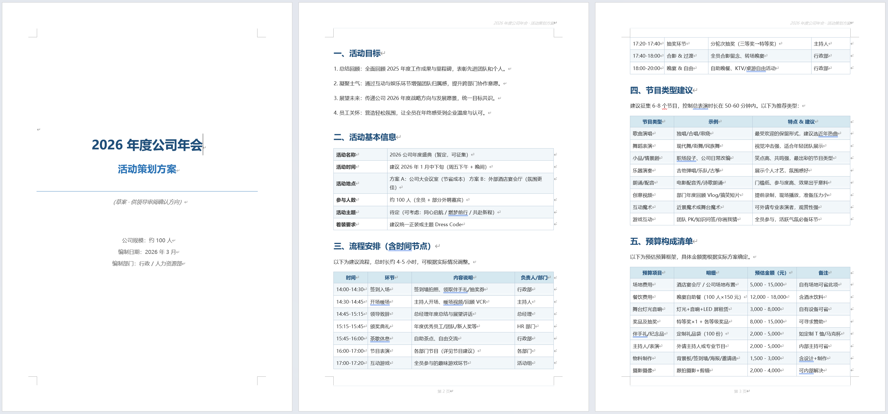
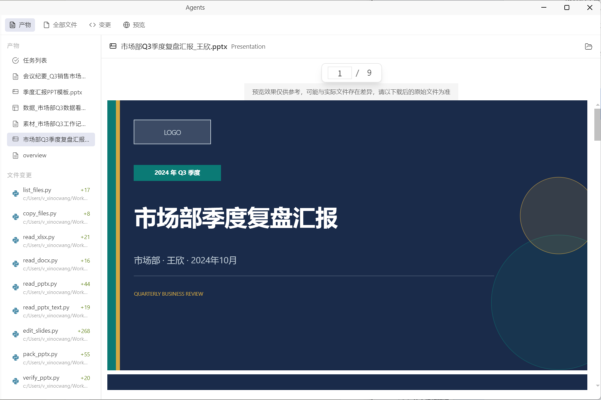

实践二：文档生成与编辑
一、文档说明
本文介绍如何通过 WorkBuddy 生成和修改 Word 文档与 PPT，适用于方案撰写、汇报材料制作、已有内容优化等场景。
二、一句话生成 Word 文档
1）操作说明
- 适用场景：快速生成通知、方案、申请、制度、汇报等正式文档。
- 推荐做法：直接描述文档目标、对象、语气和结构要求。
2）示例指令
请帮我生成一份正式的公司年会策划方案，包含活动目标、基本信息、流程安排、节目策划和预算，整体语气正式，适合提交给管理层审批。
3）效果示意

4）二次修改方式
文档生成后，无需手动打开文件逐项修改，可直接继续对 WorkBuddy 说明调整意见，例如：
- 预算清单需要更详细。
- 请为每个流程环节补充一条注意事项。
- 整体语气再正式一些，适合给老板审批。
WorkBuddy 会在原有内容基础上继续修改，无需重新编写整段提示词。
三、根据素材和模板制作 PPT
1）操作说明
- 适用场景：已有文本素材、汇报大纲或参考模板，需要快速生成演示文稿。
- 推荐做法：同时提供素材、页数要求、受众对象和风格偏好。
2）示例指令
请根据我提供的项目总结材料，制作一份
10页以内的汇报PPT，风格简洁专业，适合业务评审场景，并突出成果、数据和下一步计划。
3）辅助方式
还可以调用文档生成相关的 专家，提升生成效率与版式质量。

4）效果示意

四、使用建议
- 先说清目标读者：不同读者决定文档语气与内容深度。
- 一次说明清楚结构：例如页数、章节、必须包含的模块。
- 修改时直接说差异：与其重写，不如明确指出哪里需要补充、删减或调整风格。